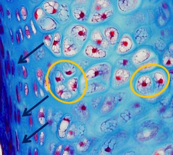

B. Welke kraakbeencellen zie je?
Kan je chondroblasten en chondrocyten onderscheiden? Hoe zijn ze geordend?
Chondroblasten zijn de kraakbeencellen die zeer actief de extracellulaire matrix aanmaken en deze matrixcomponenten rondom zichzelf afzetten. Chondroblasten zijn perifeer gelegen in de kraakbeenmatrix, tegen de binnenzijde van het perichondrium waaruit ze differentiëren. Hierdoor zullen ze ook een rol spelen in de diktegroei van het kraakbeen (zie verder). Chondroblasten zijn wat meer afgeplat of ovaal van vorm. Aangezien ze actief matrixmateriaal produceren zullen ze een uitgebreid RER en Golgi apparaat hebben. Dit maakt dat hun cytoplasma eerder basofiel (veelal donker) kleurt.
Wanneer chondroblasten zichzelf volledig hebben ingesloten met matrix worden ze chondrocyten genoemd. In groeiend kraakbeen kunnen de chondrocyten zich nog delen. Door de stevige matrix blijven de gevormde dochtercellen in groepjes van 2 tot 4 bij elkaar liggen en vormen zo isogene groepen. Chondrocyten zijn rond en volumineus. Na fixatie en ontkalken van het preparaat krimpen ze wel wat, zodat je kan zien dat ze in een holte of lacune liggen. Oudere chondrocyten kunnen glycogeen en vetdruppeltjes in hun cytoplasma opstapelen. Hierdoor is het cytoplasma moeilijk kleurbaar en zijn vooral de kernen duidelijk zichtbaar.
Chondroblasten zijn de kraakbeencellen die zeer actief de extracellulaire matrix aanmaken en deze matrixcomponenten rondom zichzelf afzetten. Chondroblasten zijn perifeer gelegen in de kraakbeenmatrix, tegen de binnenzijde van het perichondrium waaruit ze differentiëren. Hierdoor zullen ze ook een rol spelen in de diktegroei van het kraakbeen (zie verder). Chondroblasten zijn wat meer afgeplat of ovaal van vorm. Aangezien ze actief matrixmateriaal produceren zullen ze een uitgebreid RER en Golgi apparaat hebben. Dit maakt dat hun cytoplasma eerder basofiel (veelal donker) kleurt.
Wanneer chondroblasten zichzelf volledig hebben ingesloten met matrix worden ze chondrocyten genoemd. In groeiend kraakbeen kunnen de chondrocyten zich nog delen. Door de stevige matrix blijven de gevormde dochtercellen in groepjes van 2 tot 4 bij elkaar liggen en vormen zo isogene groepen. Chondrocyten zijn rond en volumineus. Na fixatie en ontkalken van het preparaat krimpen ze wel wat, zodat je kan zien dat ze in een holte of lacune liggen. Oudere chondrocyten kunnen glycogeen en vetdruppeltjes in hun cytoplasma opstapelen. Hierdoor is het cytoplasma moeilijk kleurbaar en zijn vooral de kernen duidelijk zichtbaar.

Kraakbeenstukje met AZAN gekleurd.
De blauwe pijlen duiden afgeplatte, perifeer gelegen chondroblasten aan.
Isogene groepen van volumineuze chondrocyten zijn geel omcirkeld.
Vordering zelfstudie kraakbeen: